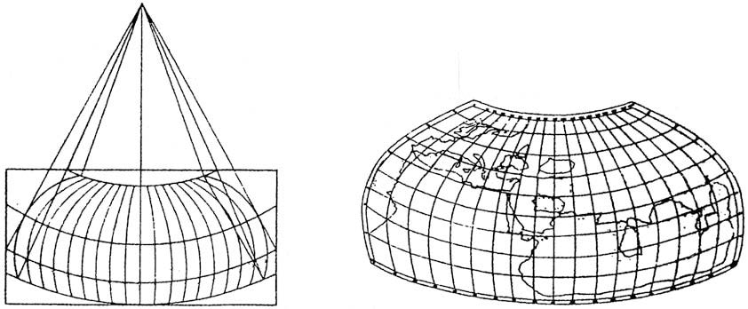
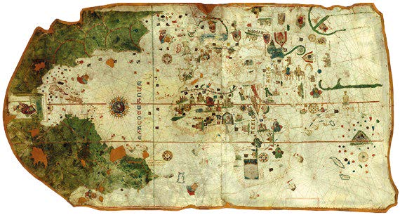
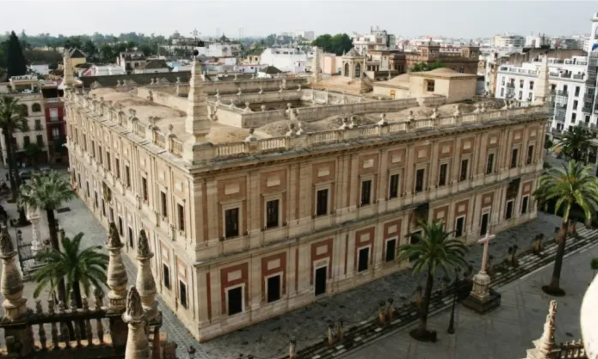
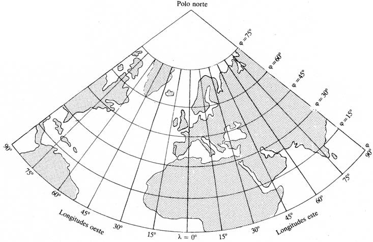
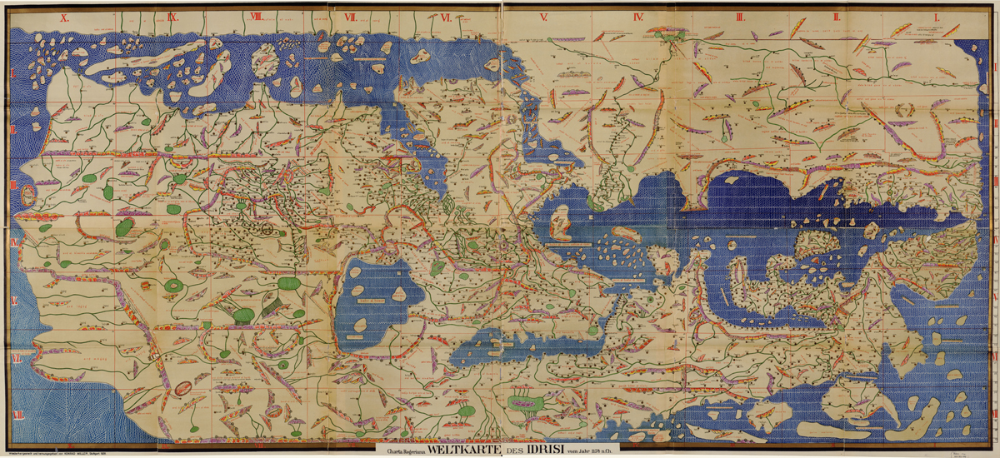

Desde la antigüedad, los mapas han sido símbolos de poder y conocimiento. Los grandes imperios, como los de Babilonia, Roma y posteriormente los reinos europeos, dependieron de los mapas para consolidar su dominio. La exactitud de un mapa, determinada en gran parte por su proyección, marcaba la diferencia entre el éxito o el fracaso en la navegación y el control del territorio.
Contexto histórico
Primeros sistemas de proyección y la influencia clásica
- Orígenes conceptuales: El concepto de proyección cartográfica nace en la antigüedad clásica. Filósofos y matemáticos griegos como Hiparco y Ptolomeo establecieron sistemas para representar la esfera terrestre en superficies planas. Estas ideas se conservaron en textos como la Geographike Hyphegesis de Ptolomeo, que influyeron profundamente en el Renacimiento europeo.
- Época medieval: Durante la Alta Edad Media, en Europa Occidental se perdió el conocimiento de las proyecciones debido al predominio de creencias religiosas que postulaban una Tierra plana. Sin embargo, en el mundo islámico, incluyendo Al-Ándalus, se preservaron y enriquecieron las obras clásicas. Cartógrafos como Al-Idrisi adaptaron las proyecciones ptolemaicas a nuevas realidades geográficas.
El Renacimiento y el impulso de la exploración
- Proyecciones en la náutica: Con la era de los descubrimientos, España y Portugal lideraron el desarrollo de la cartografía práctica. Se adoptaron mapas basados en proyecciones cilíndricas y gnomónicas para la navegación marítima. Ejemplo destacado es la carta de Juan de la Cosa (1500), aunque rudimentaria, incorpora elementos proyeccionales básicos.
- Casa de la Contratación: Fundada en Sevilla, lideró la innovación cartográfica en España durante el siglo XVI. Aquí se crearon mapas con proyecciones prácticas para la navegación transoceánica, fundamental para el comercio y la colonización.
Siglos XVIII y XIX: avances en proyecciones científicas
- Influencia de Lambert y Bonne: En España, la proyección cónica conforme de Lambert y la cónica equivalente de Bonne fueron adoptadas para la creación de mapas nacionales, al igual que ocurrió en otros países europeos. La exactitud y la capacidad de adaptar estas proyecciones a regiones concretas fueron fundamentales para la cartografía topográfica.
- IGN y la cartografía nacional: En 1870, se estableció el Instituto Geográfico Nacional (IGN), que impulsó el uso de proyecciones avanzadas como las policónicas y posteriormente la Transversa de Mercator.
Siglo XX: modernización y estandarización
Proyección UTM: Durante el siglo XX, España adoptó la proyección Universal Transversa de Mercator (UTM), especialmente para aplicaciones militares y civiles. Este sistema permitió una cobertura más exacta y uniforme del territorio nacional.

Primera proyección Ptolomeo. Fuente: Martín López, 2015

Fuente: IGN


Fuente: Martín López, 2015

Fuente: http://www.arauco.org/sapereaude/cartografia/mapasac/tabularogeriana.html
Obra publicada con Licencia Creative Commons Reconocimiento Compartir igual 4.0